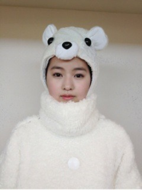

| 2012/11 21 Wed | 295回目*marika |
こんばんまりっか。
また更新するよ

...いやーもう冬ですね。
しろくまりっくま元気にしてるかな...
きっと今頃冬眠してるんだろう。
ところでみなさん
しろくまりっくま知ってますか？
知らない方もいらっしゃると思うので
プロフィールでもあげよう。

通称:しろくまりっくま(熊科の雌)
2ndから突然現れた幻の熊。
...本当に熊なのか
正体は未だ解明されていない。
性格:温厚でおっとりしている。
普段はのろい。無口。
鮭奪われると荒れる。強い。
特徴:眉毛、顔がふたつあるところ。
常日頃顔が腑抜けている。
突然踊り荒れ狂う。
好物:鮭。鮭しか食べない。
鮭がないと生きていけない。
苦手:黒めの熊、人
こんな感じです

許可なく顔写真載せちゃったから
あとで謝っておきます。
......
ほんと、寒くなったなあ。
みなさん風邪ひいてませんか><？
生姜あったまるよ！←
**********
 春のメロディーで
春のメロディーで
一番気に入ってるところは？
 サビのフリすごいかわいい。
サビのフリすごいかわいい。
みんなで行進するところもすき！
付き合うならどうして中田なの？
私はきっと男の子になっても
めんどくさいかまってちゃんだから
逆にさばさばしてる中田様が
彼女さんだったら
どんな感じかなーって思って
 //
//
//
...根拠はない。
かなりんはツンが強いデレなんだぜ。
彼は若月です

ひめかと奪い合う毎日。←
帽子の種類で一番好きなのは？
ニット帽。
まりかのお兄ちゃんって
どんな人なのー？
んー最近は落ち着きすぎて
一緒にいると私がうるさいみたいな
感じなのだよ

機会音痴な私を助けてくれる
優しい理系のお兄ちゃんです。
そういえば、万理華ちゃんの絵を
見たことないけど...
今度、適当なものを絵に
描いてみせてくれないかな？（笑）
ブログに載せたことあるよー！
最近だと、241回目の記事です。
細かいのをちょこちょこ
描くのがすきです。
絵を描くの、実はすきです。
Wii持ってますか？
持ってません
オシャレは足元からじゃん？
男性にどんな靴はいてもらいたい？
古っぽい感じのとか、
とんがってないもの！
年下メンバーからは
どんな接し方されてんだろう？
いじられ倒される。
年関係ないね、もう
美術の成績はどうだったの？
高校はないんだけど、
中学はずっと5だった。
**********

おやすみなさい☆
まりか
コメント(227)
2012/11/21 00:24